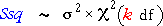
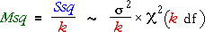
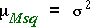
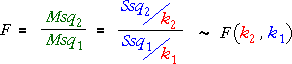

This page summarises the most important results from this section.
The terminology and results below underly many statistical methods in this and later chapters.
Sums of squares
Sums of squares have distributions that are proportional to chi-squared distributions. The shapes of these chi-squared distributions depend on constants called their degrees of freedom.

For example, the sum of squares round µ has a chi-squared distribution with n degrees of freedom whereas the sum of squares round the sample mean has (n - 1) degrees of freedom.
Mean sums of squares
Since a raw sum of squares has a chi-squared distribution whose mean is proportional to its degrees of freedom, we define the mean sum of squares by dividing the sum of squares by its degrees of freedom,

The mean sum of squares has a distribution whose shape is also proportional to a chi-squared distribution, but its mean is now σ2,

The mean sum of squares is therefore an unbiased estimator of σ2.
The sample variance is an example of a mean sum of squares.
F ratio
If we have two independent mean sums of squares involving the same σ2, their ratio has an F distribution whose degrees of freedom are those of the numerator and denominator. Note that this F distribution does not involve any unknown parameters.

The ratio of two sample variances is an example, provided the two samples are from normal distributions with the same σ2.
Hypothesis testing
Since F ratios have distributions that do not involve unknown parameters (at least when some assumptions are made about the model underlying the data), they can be used as test statistics.
The observed value of the F ratio can be compared to this F distribution to assess a hypothesis about the underlying model — were the assumptions valid?